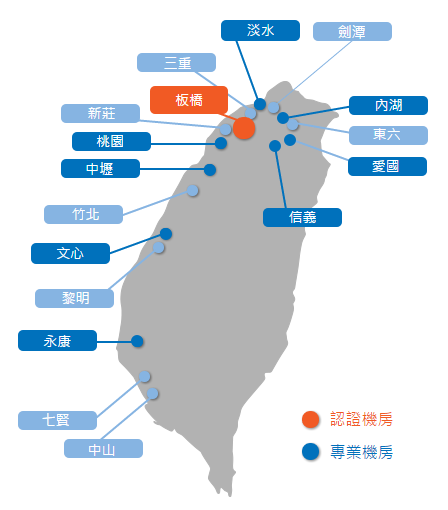
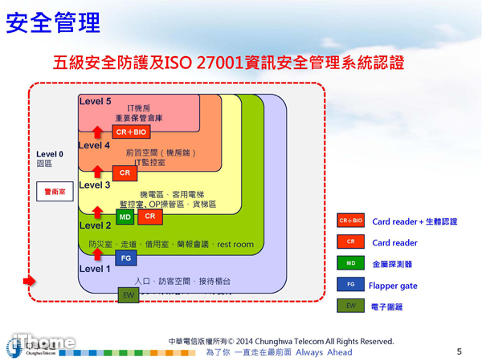

|
主講人:林仲鑠 副處長
【演講內容】
根據Cisco的全球資訊流調查報告顯示，2016年資料中心的流量達到5.6 ZB(Z代表10的21次方)，並預測到了2019將達到10.4 ZB，每年平均增加25%的流量；其中有超過70%的訊務會發生在資料中心內，表示資料中心將成為企業的資訊匯流中心。
近年來中華電信資料中心(IDC)業務持續成長，包括政府、金融、電子商務、資訊科技、娛樂媒體、服務業、大小型企業公司等產業發展需求，目前已持續增加資料中心的總面積與機櫃(圖1)，提供國內最好的服務。

圖1：國內中華電信資料中心分布圖
在建置資料中心的過程，必須要顧及四大主軸：可靠穩定、靈活彈性、安全智慧及永續管理，同時在規劃之初就必須要考量資料中心未來的生命週期，並且根據策略評估、整合設計、佈署建置與永續管理等階段，以達成未來資料中心的高效益性，這樣才能確保資料中心的價值。
另外資料中心的基礎設備是非常重要的，從電力供應、冷卻系統、安全管理、消防設施、環保節能，這些設施都會影響一個資料中心的好壞，身為顧客當然希望自己的資料能處於一個安全又有高效能的環境中。
- 電力供應：電力供應必須為無單點故障，即電力設備有兩處，一旦有一處的電力設備損毀，仍然可以提供良好的電力，確保機房不斷電可持續運作不受影響。
- 冷卻系統：機房內部環境方面，為了確保主機運作順暢及延長設備使用壽命，機房內部採用IDC專用的高顯熱及雙冷源、雙水源備援之空調系統。
- 安全管理：嚴格選址評估避免地震、水災等各種天然災害之風險，並於建築物興建時，採用SRC鋼骨防震建築架構的機房，耐震達七級以上，建築主體周邊設計防水閘門、截水溝等防洪設施。
- 消防設施：各機房建材屬防火材質，消防設備均採用高標準的多重部署、雙重偵測、雙層防護架構， 採用極早期火災預警系統，提前預測火災是否發生。
- 環保節能：中華電信為具體履行對環境永續發展的承諾，持續探索及改善現有設施，降低能源消耗、減少對環境的影響，並在建構新的資料中心時，以達到PUE 1.5以下的高能源效率為重點指標。
資料中心除了建設的考量之外，也設計了多重門禁控制系統(圖2)，來確保資料中心進出的安全，大樓出入口處設有刷卡機與警衛管制，內部從電梯、資料中心出入口到機櫃等也都設有讀卡機管制及人臉辨識系統，能夠有效過濾不相關人士接觸到機櫃與伺服器，以保障系統與資料的安全性。

圖2：門禁控制系統
中華電信新落成的板橋資料中心，全台第一座TIA 942 Rated 4 & Rated 3認證機房，擁有機房五道實體安全防護、園區/機房無死角攝影監控系統、SOC資安防護，此外他們也通過美國綠建築協會LEED黃金級認證及取得台灣綠建築、智慧建築等標章(圖3)；中華電信的板橋新資料中心是完全依據資料中心的標準規劃設計及建設，讓新世代資料中心成為國內企業營運的核心，以提供一個最好的設施給客戶，並讓客戶能夠覺得安全與放心。
圖3：中華電信板橋資料中心已獲得之標章
身為台灣最大雲端服務供應商的中華電信，提供足以媲美國際雲端服務業者的hicloud雲端服務，產品內容包含CaaS雲運算、VPC虛擬私雲、PaaS雲創平台、Mall雲市集、Boxe資料櫃以及S3雲儲存等，提供客戶用多少付多少的彈性與擴充服務，讓台灣企業與政府機關可以享受到高性能、低成本的雲端服務，近來中華電信也積極開發混合雲、虛實整合與桌面雲服務，希望讓客戶能使用得更方便與更安全甚至降低成本，來達到雙贏，必須搭配專業的資料中心及服務團隊，才能滿足客戶的需求。
資料中心雖是一個高耗能的服務，但能容納各方自建的資料中心，以整體來看是節能的服務，雲端運算的技術也可以節能的；在國際公認標準建設的資料中心下，客戶較能接受，且善用雲端服務供應商的資源已形成一種趨勢；隨然雲端技術的進步，虛實整合的混合雲服務是當前的主流，未來雲端服務將走向完全軟體化的雲，然而資料中心及雲端服務是競爭激勵的服務，為有差異化的產品及服務才有可能勝出，也就是結合應用層的軟體服務才是獲利的主軸。
【活動照片】
【圖片來源】
中華電信IDC-整合式資料中心 - hinet.net
http://www.idc.hinet.net/index.html
|  回首頁
回首頁